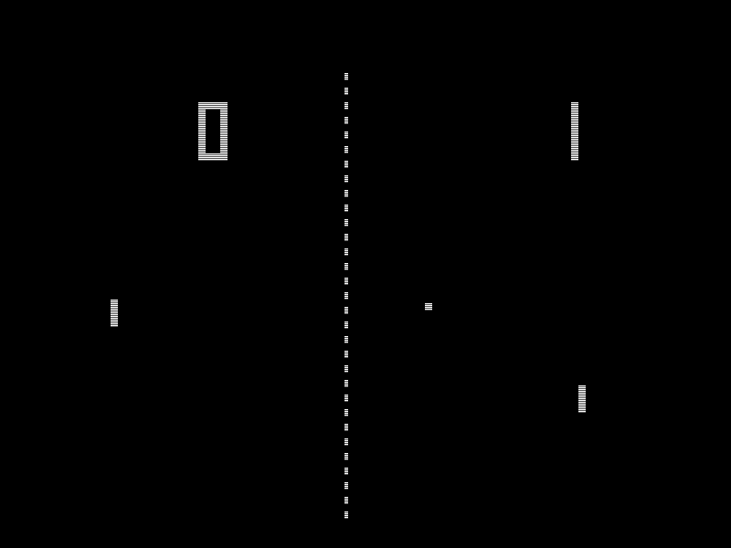
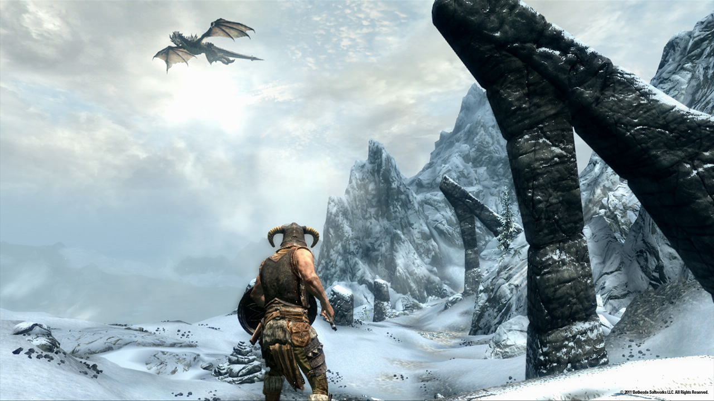
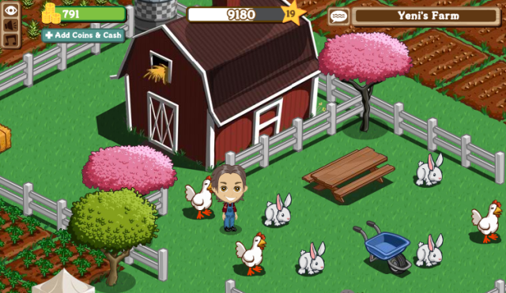

Über mich
| 2006 | Abitur am Gymnasium Norf |
| 2006 - 2008 | Studium Computational Engineering Science  |
| 2008 - 2010 | Duales Studium an der FH Aachen Auszubildender zum Mathematisch- technischen Softwareentwickler |
| 2010 - 2012 | Studium an der Universität Maastricht Projektkoordinator und Entwickler Dozent an der FH Aachen für C# und Skriptsprachen |
| seit 2012 | Wissenschaftlicher Mitarbeiter Projekt: eCampus |
Was sind eigentlich moderne (Computer) Spiele?



Pong (1972)
Pong (1972)



Skyrim (2011)
Skyrim (2011)

Farmville (2009)
Farmville (2009)